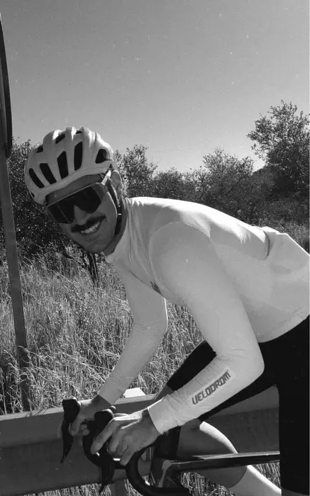
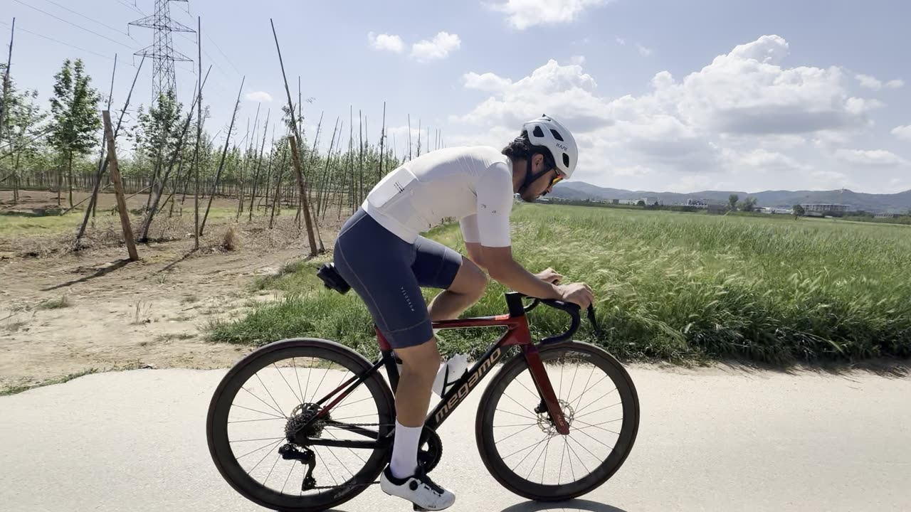
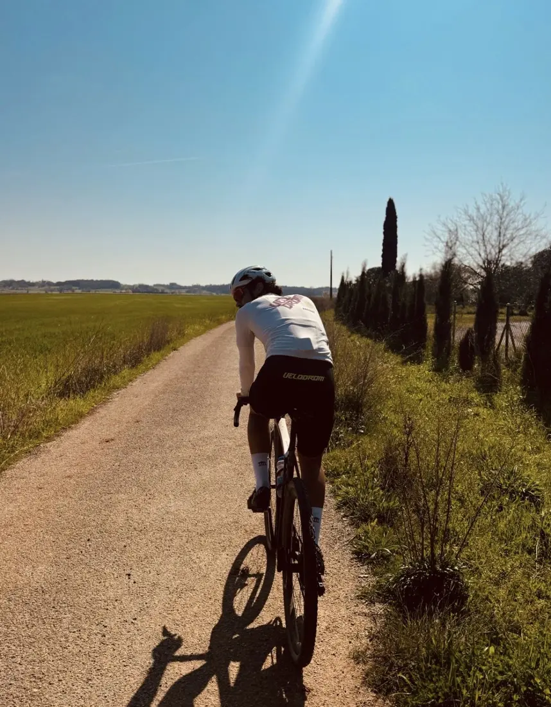

Carregant el pla…
El camí
Cap als 280
Primavera · Empordà
FTP en watts

- Atleta
- Albert Grau Bosch
- Edat
- 23 anys
- Pes
- 75 → 70 kg
- Cadència
- 77 → 88 rpm
- Pic de forma
- gener 2027



| Zona | % FTP | Watts |
|---|
L'app mira Strava cada 5 minuts mentre està oberta i cada cop que hi tornes. Compara cada sessió amb l'activitat del mateix dia: durada, potència dels millors blocs de la durada de cada interval i cadència.